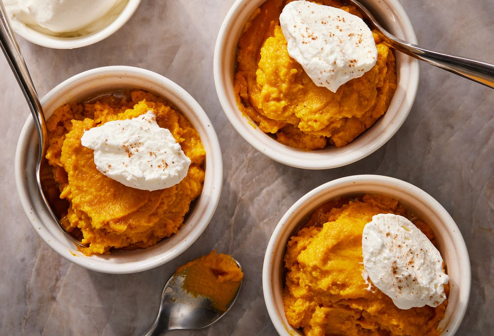

Sweet Potato Pudding
This silky smooth sweet potato pudding is a lighter, simplified cousin of sweet potato casserole without the topping or crust. It's essentially the filling of sweet potato pie with an optional whipped cream or marshmallow fluff topping. No crust or crimping fuss required! The texture is smooth like a pudding but, after chilling, holds its shape similar to cold ice cream. The pudding is great served as a healthier take on Thanksgiving dessert, or for breakfast during the holidays. If you like, add toasted, chopped pecans and toasted coconut for a little more flair.
Blending the pudding ensures there are no lumps and the smoothest possible consistency. Alternatively, you can use an immersion blender or even a potato masher if you don’t mind a rustic texture similar to a casserole filling.
To make the pudding, the sweet potatoes are first boiled for maximum moisture, then blended with classic ingredients like brown sugar, butter, and vanilla. To set, you'll bake the pudding for around an hour. This pudding is incredible warm, but it's even better after a day of chilling in the fridge and served cold. The pudding can be refrigerated for up to 3 days. Reheat or serve cold. If you'd like to freeze it, proceed with the recipe all the way through the step of baking, then freeze the raw mixture. Bake from frozen until warmed through.
Ingredients
- 2 1/2 lb. sweet potatoes (about 4 large), peeled and cut into 1" cubes
- 4 tbsp. unsalted butter, cubed
- 1 large egg
- 1/2 c. (105 g.) packed dark brown sugar
- 1/4 c. whole milk, evaporated milk, or full-fat coconut milk
- 1 tsp. kosher salt
- 1 tsp. pure vanilla extract
- 1/2 tsp. ground nutmeg
- Whipped cream or marshmallow fluff, for topping
Steps
- Arrange a rack in center of oven; preheat to 350º.
- In a large pot, place potatoes. Add enough water to cover potatoes by 1". Cover pot and bring to a boil over high heat. Once boiling, reduce heat to medium and cook at rapid simmer until potatoes are easily pierced with a paring knife, 10 to 12 minutes.
- Drain potatoes in a colander and transfer to a blender. Add butter and cover to let butter melt. Add egg, brown sugar, milk, salt, vanilla, and nutmeg and blend until smooth. Transfer potato mixture to an 8"-by-8" baking dish.
- Bake pudding until warmed through and lightly golden on top, 55 to 65 minutes. Let cool on a wire rack 1 hour.
- Serve at room temperature or refrigerate until cold. Divide pudding among small bowls or ramekins. Top with a dollop of cream.
- Make Ahead: Pudding can be made 3 days ahead. Store in an airtight container and refrigerate.